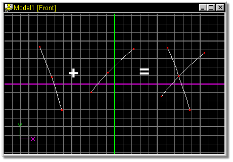
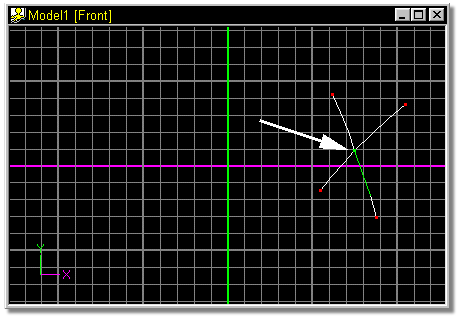
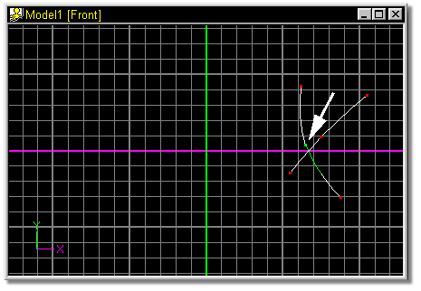

To separate splines sharing the same Control Point, for example at the
junction of a cross, select the spline you want to detach by clicking on it, then
click the Detach button. The spline will be separated (but you can not tell until
you move it), and can be moved by clicking on the control point and dragging it.
To separate splines sharing the same Control Point, for example at the
junction of a cross, select the spline you want to detach by clicking on it, then
click the Detach button. The spline will be separated (but you can not tell until
you move it), and can be moved by clicking on the control point and dragging it.
The default keyboard shortcut key for Detach Point is <Shift>+K.

While modeling, many splines will be joined together.

To detach two control points, start by selecting the control point to be detached.
The selected control point and associated spline will turn green.

Click the Detach Point button on the Tool Panel. The joined splines will separate at the selected control point. Although it may not always be apparent that a separation was made, clicking on the control point and dragging it will verify that there are now two splines.

Related Topics:
Adding Control Points
Attaching Control Points
Break Spline
Delete Control Point
Insert Control Point
Smooth
Peak
Magnitude
Bias